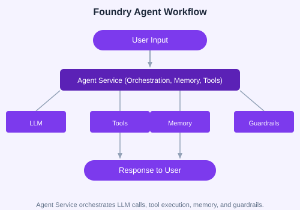

Foundry's Agent Service provides a managed runtime for AI agents. You can create, configure, and monitor agents through the portal or SDK.

from azure.ai.projects import AIProjectClient
from azure.identity import DefaultAzureCredential
client = AIProjectClient(
subscription_id="your-sub",
resource_group="your-rg",
project_name="my-project",
credential=DefaultAzureCredential()
)
agent = client.agents.create_agent(
model="gpt-4o",
name="MyFirstAgent",
instructions="You are a helpful assistant that answers questions about Azure."
)
response = client.agents.send_message(agent.id, "What is Azure AI Foundry?")
print(response.text)| Tool | Description |
|---|---|
| Web Searcher | Search the web for real-time information |
| Code Interpreter | Execute Python code in a sandboxed environment |
| OpenAPI Tool | Call any REST API via OpenAPI spec |
| MCP Server | Connect to MCP-compatible tool servers |
| Azure AI Search | Query vector indexes for RAG |
| Memory Store | Persist conversation history and user context |
from azure.ai.projects.models import ToolSet, CodeInterpreterTool, WebSearchTool
toolset = ToolSet()
toolset.add(CodeInterpreterTool())
toolset.add(WebSearchTool())
agent = client.agents.create_agent(
model="gpt-4o",
name="MultiToolAgent",
instructions="Use tools to answer user questions.",
toolset=toolset
)Foundry agents can control browser-based workflows for web scraping, form filling, and testing using Playwright-based automation tools.